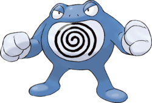

Recherche
Ptitard - 060
Nom Anglais : Poliwag
Nom Original : Nyoromo, ニョロモ
Génération : Première
Type : Eau
Catégorie : Pokémon Têtard
Sexe : Femelle : 50% | Mâle : 50%
Description : Ptitard ressemble à un têtard bleu. Son ventre transparent laisse apparaître un organe interne ayant la forme d'un disque d'hypnose (une spirale noire sur un disque blanc). Il possède deux petits pieds encore inadaptés à la marche, deux yeux globuleux et une bouche cerclée par d'épaisses lèvres roses.
Ptitard - 060

Têtarte - 061
Tartard - 062